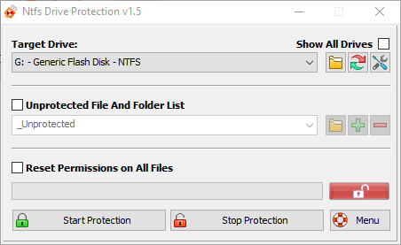

TOP
DISK AND DRIVE TOOLS
FIX MBR
SHADOW DEFENDER
NTFS DRIVE PROTECTION
NTFS Drive Protection dùng để khóa, chống việc ghi trực tiếp file lên các partition có định dạng NTFS. Tải NTFS Drive Protection tại
Trang chủ hoặc
Google Drive

PROTECT:
- Unprotected File and Folder List: check chọn nếu muốn tạo một số thư mục không áp dụng chống việc ghi dữ liệu trong drive (gõ tên trong list rồi click nút +)
- Click nút Start Protection và đợi quá trình hoàn tất (Nút ổ khóa chuyển sang hình khóa lại và có màu xanh)
DEPROTECT:
- Check chọn Reset Permissions on All Files (đặt lại phân quyền truy cập cho các file, nếu không chọn các file sẽ bị hạn chế quyền truy cập)
- Click nút Stop Protection và đợi quá trình hoàn tất (Nút ổ khóa chuyển sang hình mở khóa và có màu đỏ)